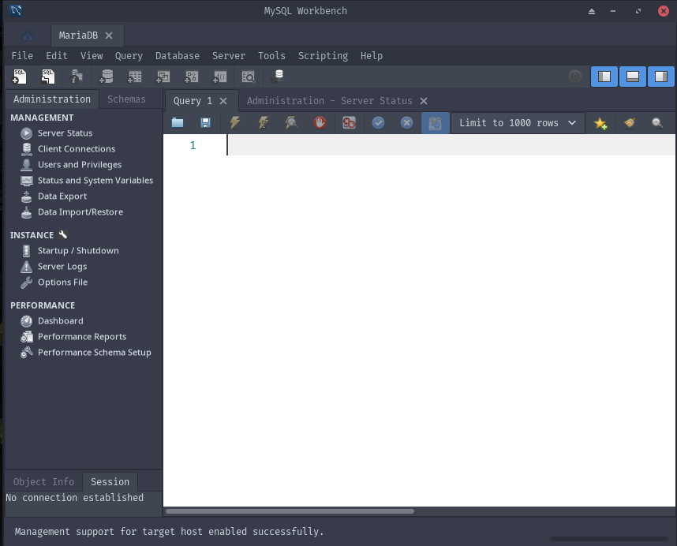
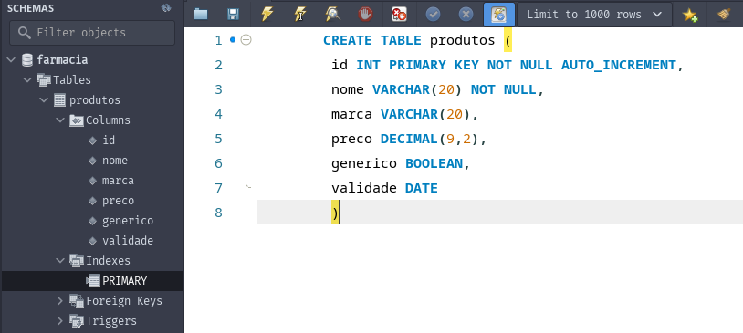

Anterior: Senac: Linguagem SQL Proxima: Senac: Manipulação de dados Raiz: Auxiliar na modelagem e manipulação de banco de dados
Na computação, dados são toda a informação que pode ser traduzida eficientemente para a leitura, a transferência e o processamento.
| Unidade | Valor |
|---|---|
| bit | 1 bit |
| byte | 8 bits |
| kilobyte | 1024 bytes |
| gigabyte | 1024 kilobytes |
| terabyte | 1024 megabytes |
| petabyte | 1024 teraabytes |
| exabyte | 1024 petabytes |
| zettabytes | 1024 exabytes |
| yottabytes | 1024 zettabytes |
| brontobyte | 1024 yottabytes |
Um banco de dados nada mais é do que uma coleção de dados organizados de modo que seja possível efetuar buscas e transações fácil e rapidamente, mesmo quando se está trabalhando com grandes quantidades de dados. No contexto técnico, isso significa que a principal função do banco de dados é interagir com os sistemas a ele conectados, capturar, analisar, calcular e responder rápida e organizadamente.
Para conectar-se ao banco de dados MySQL pelo terminal podemos usar o comando
mysql -u root -pOu (utilizando no Arch Linux)
mariadb -u root -pA partir dai o terminal estará conectado ao banco e o novo prompt do shell será
[MARIADB (NONE)>]

Inicialmente não há databases (além das padrões do software) criadas. O comando SQL para criar uma database é:
CREATE DATABASE nome_do_bancoExemplo:
CREATE DATABASE farmaciaApós esse comando a database farmácia foi criada, podemos verificar com o comando:
SHOW DATABASES;Ou através da aba "schemas" no mysql workbench;
Usando o banco de dados criado
Para usar o banco de dados criado utilize o comando:
USE nome_do_bancoA função CREATE TABLE recebe o nome de uma coluna, seguido de seu tipo e marcadores opcionais (primary key, unique, not null, auto increment), elementos separados pro virgula, tendo como uso genério a seguinte forma:
CREATE TABLE nome_tabela (
nome_campo1 TIPO REGRAS,
nome_campo2 TIPO REGRAS,
nome_campo3 TIPO REGRAS,
)Exemplo:
USE farmacia;
CREATE TABLE produtos (
id INT PRIMARY KEY NOT NULL AUTO_INCREMENT
nome VARCHAR(20) NOT NULL,
marca VARCHAR(20),
preco DECIMAL(9,2),
generico BOOLEAN,
validade DATE
)
Principais regras para colunas:
NULL ou NOT NULL
CREATE TABLE generic (
coluna_1 VARCHAR(20) NOT NULL, -- campo obrigatório
coluna_2 INT NULL, -- campo não obrigatório
coluna_3 DOUBLE -- não especificar "NOT NULL" em um campo o torna imediatamente não obrigatório, isso é, pode armazenar valores nulos
);Extra-texto — Exemplo: Suponha que um jogador criou uma conta, mas ainda não criou seu personagem
CREATE TABLE (
id INT PRIMARY KEY NOT NULL AUTO_INCREMENT,
username VARCHAR(20) NOT NULL UNIQUE,
personagem VARCHAR(20)
) DEFAULT
A regra DEFAULT define um valor padrão para uma coluna
coluna1 CHAR(1) NOT NULL DEFAULT('S')Considere o caso anterior, mas agora o jogador pode comprar a versão premium do jogo, no entanto a conta começa como uma conta gratuita:
CREATE TABLE (
id INT PRIMARY KEY NOT NULL AUTO_INCREMENT,
username VARCHAR(20) NOT NULL UNIQUE,
personagem VARCHAR(20)
premium BOOLEAN NOT NULL DEFAULT(FALSE)
) AUTOINCREMENT
Torna a coluna sequencial, isso é, uma coluna gerida pelo próprio banco de dados que, a cada novo registro, incrementará em 1 o valor do campo, iniciando em 1 e seguindo o valor da entrada anterior:
| id | user | personagem | premium |
| 1 | user1 | NULL | FALSE |
| 2 | user2 | NULL | FALSE |
PRIMARY KEY
Para excluir tabelas utilizamos o comando:
DROP TABLE nome_da_tabelaPara inserir dados em uma tabela utilizamos o comando INSERT INTO
INSERT INTO nome_tabela (campo1, campo2, campo3) VALUES ("valor1", "valor2", "valor3")SELECT * FROM nome_da_tabela;O comando SELECT indica que vamos ler dados, o token * significa que buscamos todos os campos disponíveis (pode ser traduzido como "TODOS"), o comando FROM especifica a tabela que estamos consultando, sendo a forma genérica do comando:
SELECT campo(s) FROM tabelapara alterar o formato de uma tabela podemos utilizar o comando ALTER
ALTER TABLE nome_tabela AÇÃOAdicionando novos campos
ALTER TABLE nome_tabela ADD novo_campo TIPO REGRASExemplo:
ALTER TABLE remedios ADD valilade DATE NOT NULLModificando um campo existente
ALTER TABLE nome_tabela MODIFY COLUMN coluna TIPO RESTRIÇÕESExemplo:
ALTER TABLE remedios MODIFY COLUMN validade DATETIME NOT NULLExcluido um campo
ALTER TABLE nome_tabela DROP COLUMN coluna;Exemplo:
ALTER TABLE remedio DROP COLUMN validade;Como visto anteriormente, ao definir uma coluna, é necessário estabelecer o tipo de informação que ela deve carregar. A SQL estabelece alguns tipos próprios para números, texto, entre outros. Além disso, os SGBDs podem trazer variações dos tipos padrão ou tipos novos.
O conceito de chave em um banco de dados consiste em ser um valor único em uma linha que distingue esta de todas as outras linhas da tabela. Esta seria, portanto, a chamada chave primária, que é usada para relacionar os dados de uma tabela com outra, sendo essa segunda chamada de chave estrangeira.
Forma 1. Definindo a chave primária isoladamente
CREATE TABLE nome_tabela (
coluna_1 INT NOT NULL AUTO_INCREMENT
coluna_2 VARCHAR(255)
PRIMARY KEY(coluna_1)
)Forma 2. Definindo de forma declarativa
CREATE TABLE nome_tabela (
coluna_1 INT PRIMARY KEY NOT NULL AUTO_INCREMENT
coluna_2 VARCHAR(255)
)Forma 3. Adicionando a chave primaria a posteriori
ALTER TABLE nome_tabela ADD PRIMARY KEY (coluna_1);As chaves estrangeiras são utilizadas para relacionar uma tabela com outra.
O fundamento-base de um banco de dados relacional é sua capacidade de criar relacionamento entre tabelas, para que o administrador desse banco possa facilmente relacionar dados entre uma tabela e outra. Esses relacionamentos são gerenciados por chaves estrangeiras, que são, essencialmente, campos em tabelas que referenciam chaves primárias de outras tabelas.
IMPORTANTE: Não há chave estrangeira sem chave primária
Definindo uma chave estrangeira
CREATE TABLE tabela1 (
coluna_1 INT PRIMARY KEY NOT NULL AUTO_INCREMENT,
coluna_2 VARCHAR(255),
)
CREATE TABLE tabela2 (
coluna_1 INT PRIMARY KEY NOT NULL AUTO_INCREMENT,
coluna_2 VARCHAR(255),
FOREIGN KEY tabela1_id REFERENCES tabela1 (coluna_1)
Relacionamentos em SQL
Relacionando um item a outro item de forma um para um (1:1):
CREATE TABLE remedio (
id INT PRIMARY KEY NOT NULL AUTO_INCREMENT,
nome VARCHAR(255) NOT NULL,
);
CREATE TABLE bula (
dados VARCHAR(255) NOT NULL
id_remedio INT NOT NULL PRIMARY KEY
FOREIGN KEY (id_remedio) REFERENCES remedios(id)
)Relacionando 1 item a n itens de forma 1 para n (1:N)
O relacionamento 1 para n também é bem fácil. Basta adicionar a chave primária de uma tabela como chave estrangeira de outra tabela
CREATE TABLE clientes (
id INT PRIMARY KEY NOT NULL AUTO_INCREMENT
nome VARCHAR (255) NOT NULL
CPF INT NOT NULL UNIQUE
);
CREATE TABLE vendas (
id INT PRIMARY KEY NOT NULL AUTO_INCREMENT
data_venda DATETIME NOT NULL
valor DECIMAL(9,2) NOT NULL
id_cliente INT NOT NULL
FOREIGN KEY (id_cliente) REFERENCES clientes(id)
)Relacionando N itens a N itens de forma n para n (N:N)
No SQL não é possível criar um relacionamento N para N sem o auxilio de uma terceira tabela. Imagine que queremos incluir no banco anterior um campo que registra quais produtos foram vendidos em cada venda. Sera necessário criar uma nova tabela que lista os itens de uma determinada compra indiviualmente:
CREATE TABLE vendas (
id INT PRIMARY KEY NOT NULL AUTO_INCREMENT
data_venda DATETIME NOT NULL
valor DECIMAL(9,2) NOT NULL
)
CREATE TABLE produtos (
id INT PRIMARY KEY NOT NULL AUTO_INCREMENT,
nome VARCHAR(255),
valor DECIMAL(9,2),
)
CREATE TABLE veda_produto (
id_venda INT NOT NULL,
id_produto INT NOT NULL,
quantidade INT NOT NULL,
PRIMARY KEY (id_venda, id_remedio),
FOREIGN KEY (id_venda) REFERENCES vendas(id),
FOREIGN KEY (id_produto) REFERENCES produtos(id)
)